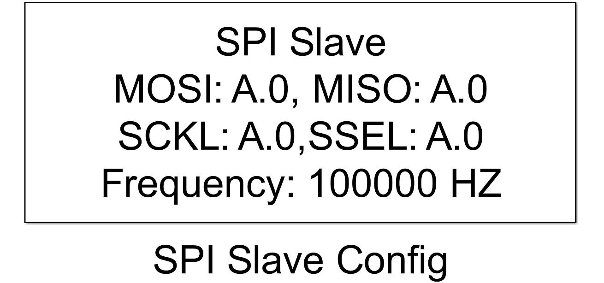
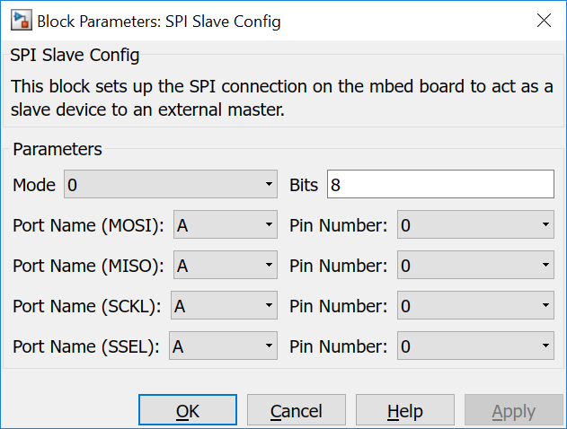

5.4.3. SPI Slave Config
5.4.3.1. Description
This block sets up the SPI connection on the mbed board to act as a slave device to an external bus master.
{kind=link}
This block sets up an SPI peripheral of the MCU to act as a slave.
Possible SPI portpins, frequencies and bit lengths depend on the mbed target. Please have a look at the specific board documentation.
Internally the mbed SPISlave class is used to set up the SPI peripheral.
Note
Only one SPI bus slave is allowed in a model.
Attention
If pins are configured which cannot be mapped to the same SPI peripheral NO error will show up at compile time, but the SPI bus won’t work.
5.4.3.2. Parameters and Dialog Box
Bus frequency
Selects the bus clock frequency, but as the master provides the bus clock this parameter can be neglected.
MOSI Port and Pin
Selects the Master In Slave Out pin of the SPI peripheral.
MISO Port and Pin
Selects the Master Out Slave In pin of the SPI peripheral.
SCK Port and Pin
Selects the Serial Clock pin of the SPI peripheral.
SSEL Port and Pin
Hardware chip select pin of the SPI peripheral.
Note
All pins have to be of the same SPI peripheral otherwise the SPI bus won’t work.